Altar
Using models made in Autodesk Maya and Zbrush, this is where a priest would stand while reading to the congregation.

Church Scene: A Closer Look

A hall of worship filled with lots of little details, from an age where candles and the sun were the sources of light. The chairs are hard and unforgiving, but people still find comfort here.
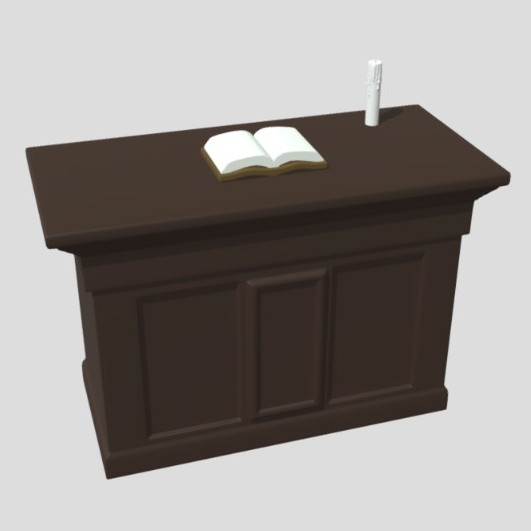
Using models made in Autodesk Maya and Zbrush, this is where a priest would stand while reading to the congregation.
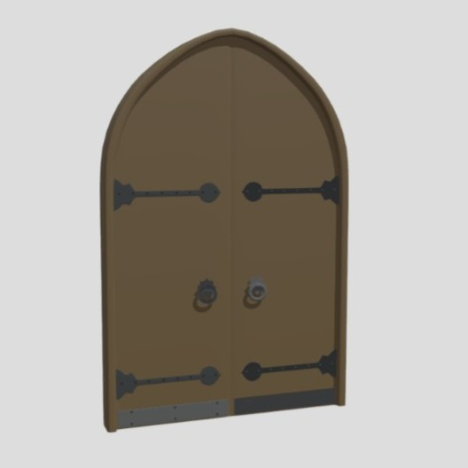
A set oof arched wooden doors with iron hardware, modeled in Autodesk Maya.
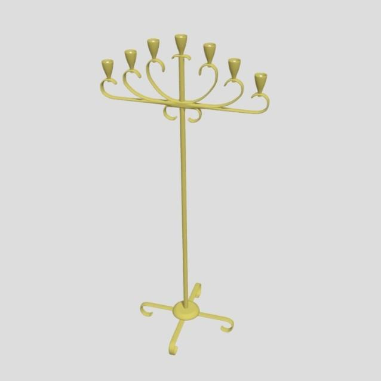
A tall candle stand holding 7 candles, modeled in Autodesk Maya.
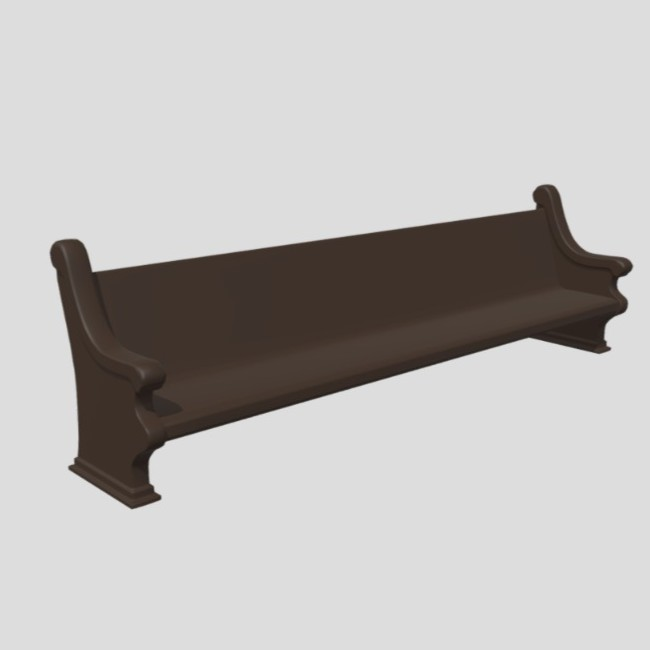
Not the sound a laser gun makes, these are long benches often found in a church, modeled in Autodesk Maya.
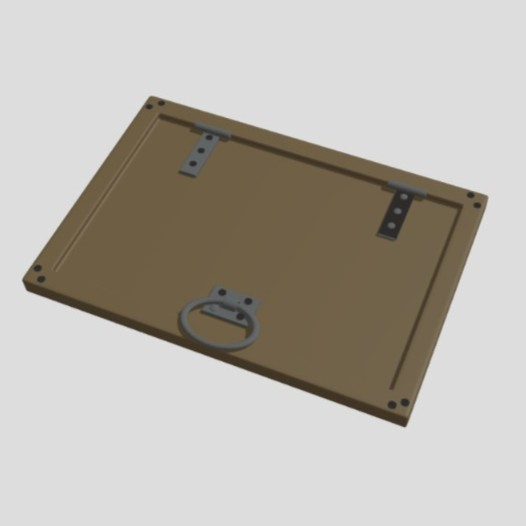
What secrets could be hiding under here? Modeled in Autodesk Maya.
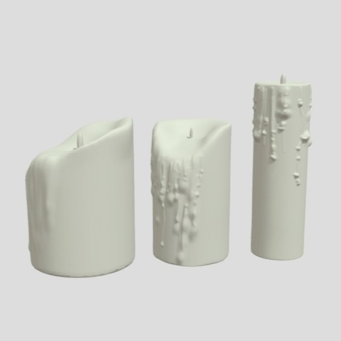
A set of three candles of various sizes, with wax drips along the sides, modeled in ZBrush.
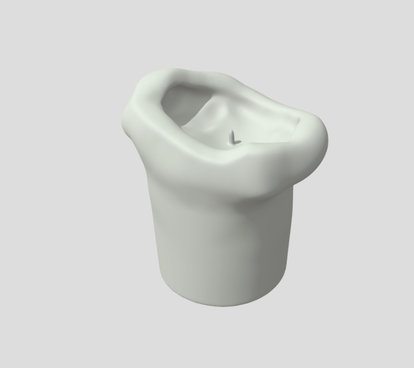
This candle melted in more of aa mushroom fashion. I think it means the wick was too small. Modeled in ZBrush.
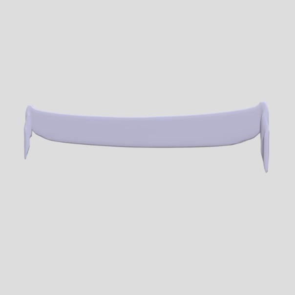
Pinned on each end, this banner drapes nicely across a wide space. Modeled in Autodesk Maya.
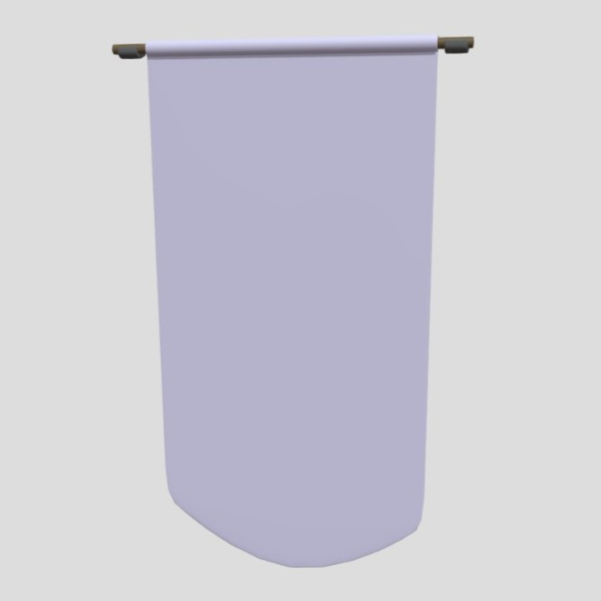
I imagine some hand stitched design would be on here, lovingly sewn by old hands and displayed proudly. Modeled in Autodesk Maya.
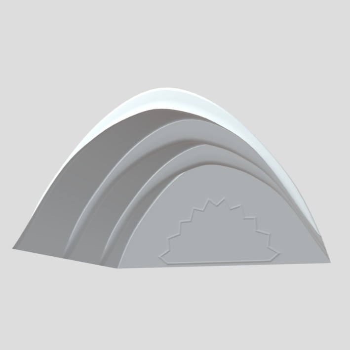
An arched ceiling with a sun-burst style window, modeled in Autodesk Maya.
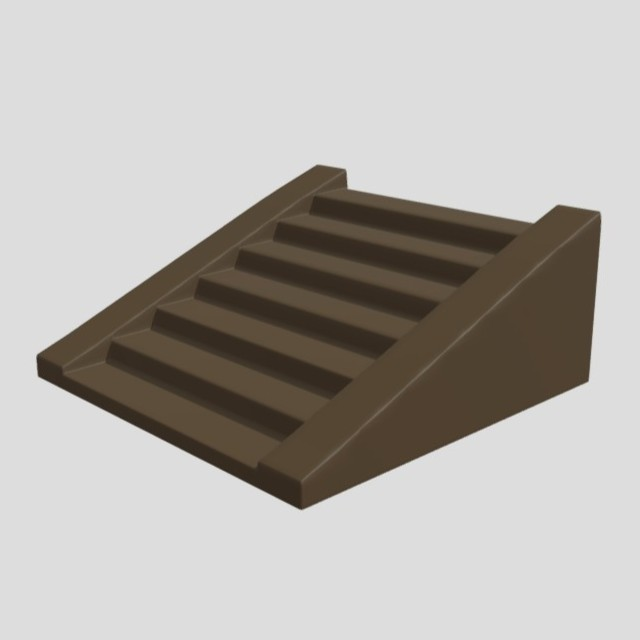
Helpful for getting on and off things. Modeled in Autodesk Maya.
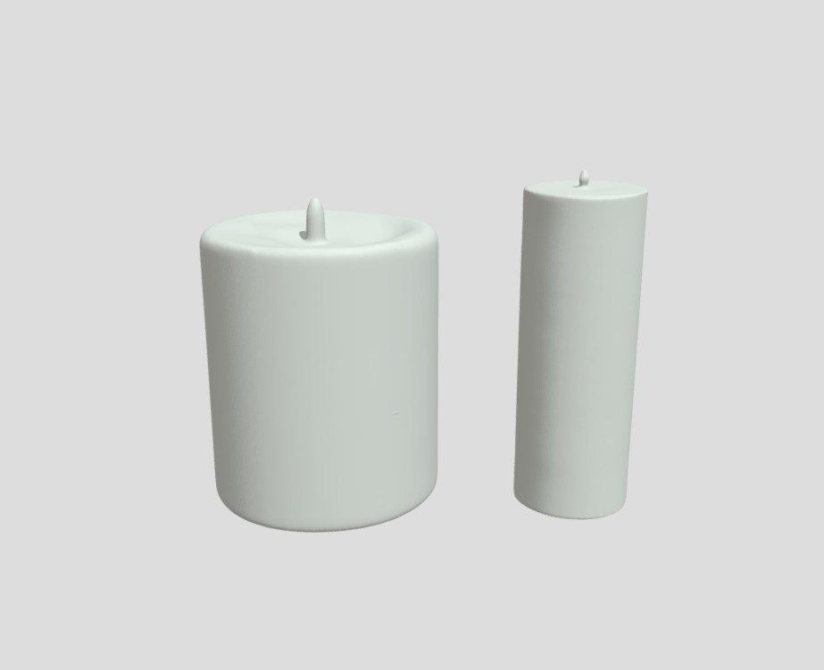
These candles haven't been used yet. Modeled in ZBrush.
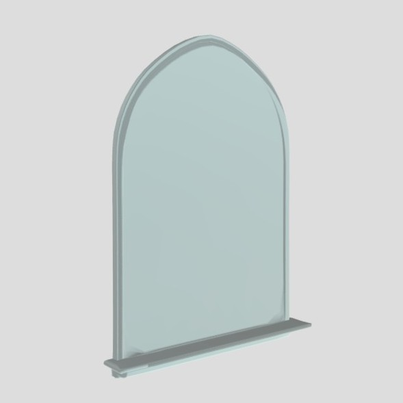
I'm a big fan of natural light, so big windows are a big plus! Modeled in Autodesk Maya.
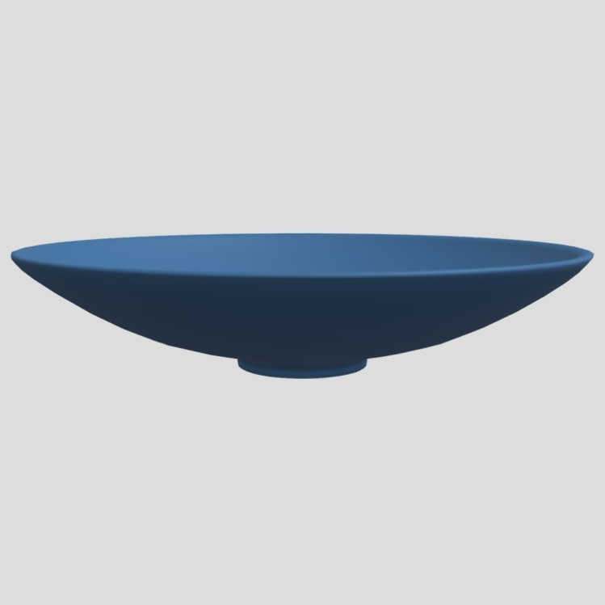
Wide and shallow, maybe used for baptisms. Modeled in Autodesk Maya.
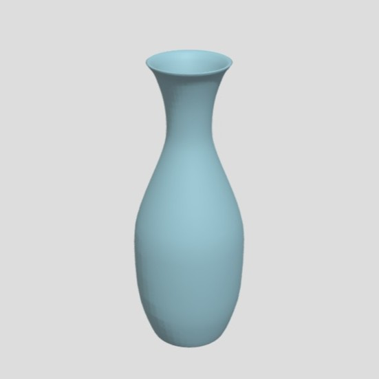
A tall decorative vase modeled in Autodesk Maya. Be careful not to knock it over!